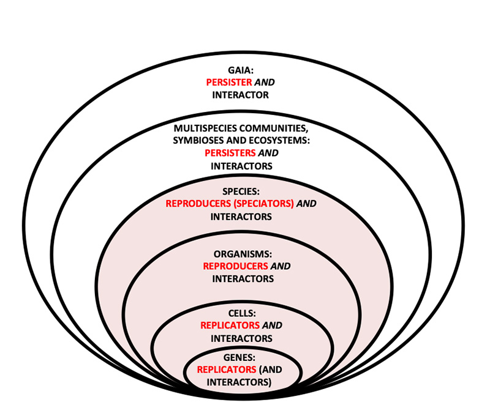

DoolittleEvolutionGaia
Created Friday 04 December 2020
@2020 @evolution @Gaia
Doolittle, W. Ford (2020). Is the Earth an organism? Aeon, 3 December 2020. https://aeon.co/essays/the-gaia-hypothesis-reimagined-by-one-of-its-key-sceptics
- Earlier darwinists rather focused on competition
- differential persistence
- replicator/interactor framework, developed by the philosopher David Hull;
- actors in natural selection are
- replicator / reproducer
- interactor
- selection
- actors in natural selection are
- "it's the song, not the singers"
Full text
Is the Earth an organism?
The Gaia hypothesis states that our biosphere is evolving. Once sceptical, some prominent biologists are beginning to agree
Water lilies in the Okavango Delta, Botswana. Photo © Frans Lanting/Lanting.com
W Ford Doolittle
is professor in biochemistry and molecular biology at Dalhousie University in Canada.
4,200 words
Edited by Sally Davies
Many of us, scientists included, harbour contradictory intuitions about Mother Nature. We can see that ecosystems often have an inherent ability to self-stabilise, and we know we wouldn’t be here if the planet hadn’t maintained conditions suitable for life for almost 4 billion years. One reaction is to claim that some Earth-wide equilibrium, though fragile, does exist, and reflects the fact that species have evolved to cooperate with one another. Another is to say that the first response is nonsense: organisms are ‘selfish’, and evolution isn’t cooperative but rather a brutish Darwinian competition that selects individual organisms based on their ability to survive and reproduce. The primordial balancing act performed by our biosphere, if it exists at all, is more or less a lucky accident.
The idea that the Earth itself is like a single evolving ‘organism’ was developed in the mid-1970s by the independent English scientist and inventor James Lovelock and the American biologist Lynn Margulis. They dubbed it the ‘Gaia hypothesis’, asserting that the biosphere is an ‘active adaptive control system able to maintain the Earth in homeostasis’. Sometimes they went pretty far with this line of reasoning: Lovelock even ventured that algal mats have evolved so as to control global temperature, while Australia’s Great Barrier Reef might be a ‘partly finished project for an evaporation lagoon’, whose purpose was to control oceanic salinity.
The notion that the Earth itself is a living system captured the imagination of New Age enthusiasts, who deified Gaia as the Earth Goddess. But it has received rough treatment at the hands of evolutionary biologists like me, and is generally scorned by most scientific Darwinists. Most of them are still negative about Gaia: viewing many Earthly features as biological products might well have been extraordinarily fruitful, generating much good science, but Earth is nothing like an evolved organism. Algal mats and coral reefs are just not ‘adaptations’ that enhance Earth’s ‘fitness’ in the same way that eyes and wings contribute to the fitness of birds. Darwinian natural selection doesn’t work that way.
I’ve got a confession though: I’ve warmed to Gaia over the years. I was an early and vociferous objector to Lovelock and Margulis’s theory, but these days I’ve begun to suspect that they might have had a point. So I’ve spent the past five years trying to ‘Darwinise Gaia’ – to see widespread cooperation as a result of competition occurring at some higher (even planetary) level. I can see a few paths by which a Darwinian might accept the idea that the planet as a whole could boast evolved, biosphere-level adaptations, selected by nature for their stability-promoting functions.
This is not exactly a recanting of views, but it’s certainly a marked departure from how I thought 40 years ago. Darwinising Gaia seems important not just to me personally, but because it would offer a satisfyingly deep theoretical basis for efforts to maintain a habitable planet – and a way to reflect on contemporary environmental crises beyond applying a simple label such as ‘Gaia’s revenge’, with its anthropocentric and theistic implications.
For traditional Darwinian natural selection to work, the entities in question must display some property or ability that can be inherited, and that results in their having more offspring than the competition. For instance, the first creatures with vision, however fuzzy, were presumably better at avoiding predators and finding mates than the sightless members of their population, and had more surviving progeny for that reason. In technical terms, then, selected entities must exist in populations showing heritable variation in fitness, greater fitness resulting in these entities’ differential reproduction.
Even if inherited properties are the result of undirected or ‘random’ mutation, repeating the selection process over generations will incrementally improve on them. This produces complex adaptations such as the vertebrate eye, with its highly sophisticated function. Light-sensitive areas acquired lenses for focusing and means for distinguishing colours step by advantageous step, ultimately producing modern eyes that are clearly for seeing. So even without an overall purpose, evolution creates something that behaves as if it has a goal.
Back in 1979, when Lovelock’s first popular book, Gaia: A New Look at Life on Earth, came out, the wider field of evolutionary biology was becoming a very reductionist discipline. Richard Dawkins’s The Selfish Gene had been published three years earlier, and it promoted a hardcore gene-centrism insisting that we look at genes as the fundamental units of selection – that is, the thing upon which natural selection operates. His claim was that genes were the reproducing entities par excellence, because they are the only things that always replicate and produce enduring lineages. Replication here means making fairly exact one-to-one copies, as genes (and asexual organisms such as bacteria) do. Reproduction, though, is a more inclusive and forgiving term – it’s what we humans and other sexual species do, when we make offspring that resemble both parents, but each only imperfectly. Still, this sloppy process exhibits heritable variation in fitness, and so supports evolution by natural selection.
In recent decades, many theorists have come to understand that there can be reproducing or even replicating entities evolving by natural selection at several levels of the biological hierarchy – not just in the domains of replicating genes and bacteria, or even sexual creatures such as ourselves. They have come to embrace something called multilevel selection theory: the idea that life can be represented as a hierarchy of entities nested together in larger entities, like Russian dolls. As the philosopher of science Peter Godfrey-Smith puts it, ‘genes, cells, social groups and species can all, in principle, enter into change of this kind’.
But to qualify as a thing on which natural selection can operate – a unit of selection – ‘they must be connected by parent-offspring relations; they must have the capacity to reproduce,’ Godfrey-Smith continues. It’s the requirement for reproduction and leaving parent-offspring lineages (lines of descent) we need to focus on here, because they remain essential in traditional formulations. Without reproduction, fitness is undefined, and heritability seems to make no sense. And without lines of descent, at some level, how can we even conceive of natural selection?
I’d hope that Darwin, were he alive today, wouldn’t balk at my non-traditional steps
This is why Lovelock’s Gaia goes many steps too far. Multispecies communities such as Gaia, many symbiotic organisms and most ecosystems don’t in general reproduce themselves. Gaia’s parts (potentially billions of species) do each individually reproduce, but the biosphere as a collective doesn’t reproduce together as a collective. It thus has no simple heredity and produces no single set of parent-offspring lineages, but rather a multiplicity of often incongruent, independently reproducing lines of descent. By standard Darwinian thinking, entities such as Gaia are not units of selection, and can’t exhibit ‘adaptations’. Maybe algal mats do control global temperature and coral reefs do have a beneficial effect on ocean salinity, but this is just good luck. Species within them might ‘coevolve’, using other species as their biotic environment – but each is selfishly on its own. Yes, bees visit flowers, and flowers encourage this attention, because that’s how their pollen is spread, but individuals within each species do this for their individual benefits, having more progeny as a result. Evolution by natural selection at the biosphere level seemed impossible 40 years ago, and still seems problematic now.
I argued this in 1981, and Dawkins made similar arguments a year later, in The Extended Phenotype. There’s no relevant Darwinian population in which biospheres compete, he observed:
But even if this were the case, it still wouldn’t be enough, Dawkins notes. We’d also have to offer an account of biospheric reproduction, ‘whereby successful planets spawned copies of their life forms on new planets’.
This view still holds the field. As recently as 2015, while reviewing Lovelock’s A Rough Ride to the Future (2014) for the London Review of Books, Godfrey-Smith could write that:
Godfrey-Smith is alluding to something like the anthropic principle: if Life had not established stabilising feedbacks, we wouldn’t be here – and, since we are, it’s necessary that it did, regardless of how unlikely that actually was. But I want something more than this – a mechanism by which selection at the level of the biosphere would be likely to produce stability. Such a mechanism – a Darwinian way of making beneficial ‘accidents’ into the equivalent of heritable variations that could evolve via natural selection – will be possible, I think. The work is far from complete, and much needs to be aligned or contrasted with emerging work in evolutionary theory. But I’d hope that Darwin, were he alive today, wouldn’t balk at the non-traditional steps I’m about to take.
First, we’d need to accept differential persistence – mere survival – as a legitimate form or mechanism of natural selection. An analogy is this: imagine there are 1,000 radioactive atoms in the process of decaying (losing particles or photons from the nucleus). The few atoms that are left several half-lives later (the time it takes for half the material to decay) are no different from those that decayed at the beginning; they are just luckier. But if there were any ‘mutations’ that gave atoms the ability to resist decay, then those left intact after several half-lives would be more likely to possess such mutations than those that decayed at the beginning. This seems like a sort of natural selection to me; and a first such ‘mutation’ would buy time for a second to occur, so ‘complex adaptations’ might be achieved.
Maybe it’s not possible for radioactive atoms to acquire stabilising mutations. And maybe it’s highly unlikely that whole biospheres, with multiple independent evolutionary lineages, could do so. But the latter is possible, and in biology we should be comfortable with this kind of reasoning. We’re quite content to say that the beneficial mutations that explain why some organisms are selected over others are also highly unlikely – it’s just that natural selection co-opts these improbable events and makes their ultimate success probable over the long run. Here, then, is where something resembling Darwinian thinking could come in.
Put another way, what selection really accomplishes is an increase in the ratio of selected entities to total entities in a population. And, actually, this can be achieved in two ways. First is differential reproduction discussed above, generally taken to be the be-all-and-end-all of evolution. Selected entities, by out-reproducing their competitors, ultimately become the only entities in a population (what biologists call achieving fixation). In effect, the top number in the ratio increases. But the phenomenon of differential persistence, in which selected entities achieve fixation through the death, extinction or disappearance of their competitors, could also work, and has been unfairly neglected. This decrease in the bottom number in the ratio could of course be random and not selective, as with radioactive decay. But if there are any strategies, mechanisms or mutations that could be acquired that make an entity more resistant to such a fate, entities that acquire these characteristics will become a larger and larger proportion of the total as time goes by, even as this total decreases. Again, such mutations could accumulate sequentially, and so produce complex adaptations.
Gaia is just the single clade of all living things descended from life’s last universal common ancestor
Differential persistence doesn’t give us Gaia all by itself, but it’s the first necessary step. We can humanise it with a second thought-experiment. Consider an island inhabited only by women, on which 10 male sailors with the surnames Doe, Smith, Jones and so forth are shipwrecked. They each pair off with one of the women, and times are generally good, so the population expands enormously. All 10 surnames, passed on in an old-fashioned patrilineal way, are represented. But periodically there’s a famine and the population is randomly reduced to 10 family couples, just the number we started with.
Now, it’s unlikely that all 10 of the original surnames would be represented among 10 couples after even one famine. And if such famines occur repeatedly, we’d ultimately be left with only one of the surnames – Jones, say. (After each famine there’s a chance that one of the surnames won’t make it, but one at least always has to.) So the persistor here would be the family surname ‘Jones’. It will have survived, and competing surnames will have gone extinct, by pure random chance.
The ‘family Jones’ as defined by surname is similar to what biologists call a clade: an ancestral species together with all its descendant species. Having that definition means that clades cannot reproduce: they can only persist or go extinct through the loss of all species. New species speciate from old ones within the clade, but all progeny species thus produced become just part of the original clade. The clade gets larger by speciation: like the group with the surname ‘Jones’, it gets ‘fatter’ but doesn’t reproduce to make another clade.
On a random basis, Doe or Smith might have been the winning surname instead, not Jones. But imagine that name-clades are differently advantaged because of underlying biological differences between their bearers – male Joneses might be bigger and be able to corner more of the food supply, and thus have more children, for instance. Then that surname would be extra likely to be included after a famine, even if the 10 famine-surviving couples were selected at random from a large population, simply because there would be a greater proportion of couples called ‘Jones’ in this population. This would be selection operating at the level of the clade, a consequence or manifestation of differential persistence. The clade-level trait selected for would be disproportionately represented in the population, whatever its lower-level cause (bigger males, in this case).
Let’s transpose this argument to Gaia. Gaia (the biological part of it, at least) is nothing more than the single clade of all living things descended from life’s last universal common ancestor (LUCA): we are all one big family of Joneses. This follows from the widely held belief that LUCA was a single cell or species. Most of us also believe that LUCA was just one of many cells or species present at that ancient time – these being the equivalent of the Does and Smiths – which went extinct as a clade sometime between then and now. Unless this were a completely random process, we could call this clade selection. That means Dawkins’s objection that Gaia is not part of a population of competitors on many planets becomes irrelevant: there were enough such competitors on this planet, possibly even in the same ‘warm little pond’: it’s just that they were less persistent than Gaia, and are now all gone. And it seems implausible that this process was completely random: larger and more ecologically diverse clades would have been favoured, for instance, as would clades that had evolved some sort of species-to-species within-clade cooperation.
Beyond differential persistence, there’s a second way that we might Darwinise Gaia. One element in this approach is multilevel selection theory sketched above, now illustrated in the figure below. This figure shows the four levels at which natural selection is effective, plus two more. It embraces the idea that natural selection can operate at different levels, sometimes even several at once, as long as there is reproduction among entities at that level. Dawkins’s own thought-experiment in The Selfish Gene offers an appropriate anchoring example, in which he shows how genes can be individually selfish but still get along to add up to a unified, competitive organism, also ‘selfish’.

Life can be represented as a hierarchy of entities nested together in larger entities, like Russian dolls. In multilevel selection theory, natural selection can be said to occur at any level at which entities reproduce – so in this hierarchy the innermost four ellipses, but not the outermost two, can meet this criterion. Though not replicators or reproducers, these outer two are still interactors (and, in my language, persisters) – so evolution by natural selection does operate upon them. Figure supplied by the author
Dawkins likened successful genes to good rowers, whose competition he must surely have cheered on as a student at Oxford. ‘One of the qualities of a good oarsman is teamwork, the ability to fit in and cooperate with the rest of a crew,’ he wrote. Indeed, eight-man shells do poorly with discoordinated rowers, so oarsmen are selected for how well they row (which in part has to do with genes for muscle development and coordination), and the teams they are on are selected in races. Rowers compete for positions on teams, and teams compete for representation in the competition with Cambridge – selection at both levels. Arguably, it is this annual competition (running since the early 19th century) that is part of the Oxbridge ‘brand’, and contributes to its worldwide academic recognition and the longevity of these remarkable institutions.
Remember the organisational hierarchy shown above: the innermost four entities – genes, cells, organisms and species – can all be said to reproduce (species via speciation) as units, producing parent-offspring lineages. Multilevel selection theory applies to these reproducers, and might be adequate to explain the presence of adaptations at these levels. All four can also be said to be interactors: genes must successfully interact with cellular replication machinery, cells with the whole of a multicellular organism, organisms with their species, and species with their ecosystems.
Interactors can be communities, ecosystems or even whole biospheres
But the outer two ellipses (and certainly the Oxbridge institutions themselves), are made up of individual entities that are only interactors and persisters: they don’t reproduce collectively and wouldn’t qualify as units of selection. They are more like clades, able to persist if they interact effectively with their environment, but not able to reproduce. So to Darwinise Gaia we also need what’s called the replicator/interactor framework, developed by the philosopher David Hull. Hull characterised the actors in natural selection as follows:
interactor: an entity that directly interacts as a cohesive whole with its environment in such a way that replication is differential …
selection: a process in which the differential extinction and proliferation of interactors cause the differential perpetuation of the replicators that produced them.
Taking this back to Gaia, what we’d need to do is sometimes substitute ‘reproducer’ for ‘replicator’, and also ‘persistence’ for ‘reproduction’ on occasion. Modified in this way, we could say that the ‘differential extinction and proliferation of interactors’ (at any level of the hierarchy in the figure above) causes the ‘differential perpetuation of the replicators that produced them’ – the term ‘perpetuation’ understood to embrace both reproduction and persistence. This is just how the longevity and the success – the persistence – of the recurring Oxbridge rowing event has encouraged generations of rowers – while, for Gaia, 4 billion years of life on this Earth has encouraged gazillions of species to evolve and proliferate.
The replicator/interactor idea can in fact be used to explain a range of fascinating biological phenomena. Humans and their gut microbiota are now often said to be holobionts, multispecies entities that interact as ‘cohesive wholes’ with their environment. This interaction is now claimed to have nutritional, developmental, immunological and even psychiatric dimensions. So, to the extent that well-nourished, fully developed and healthy individual humans are likely to survive longer and leave more progeny, these human-bacteria holobionts will ‘go extinct’ less often and ‘proliferate’ (if only by recurrence) more prolifically. In so doing, they will serve to ‘perpetuate’ the lower-level reproducers and replicators (individual Homo sapiens and many millions of bacterial individuals of the thousands of species in a healthy gut) that make up a holobiont. Beneficial strains or species of bacteria are thus differentially perpetuated through the success of a human-microbial holobiont, interacting with its environment.
On this broader view, then, interactors can be communities, ecosystems or even whole biospheres. Meanwhile, the replicators and reproducers that benefit from their successful environmental interactions are any lower-level entities that contribute to such successful interaction. Entities in any ellipse in the figure above might then be said to help the perpetuation of entities at any lower level. So we need not restrict ourselves to material reproducers or replicators (the inner four ellipses) to consider level-specific properties to be adaptations – ‘functions’ resulting from evolution by natural selection.
There’s a third and final step that I’d hope Charles Darwin might be willing to take, when assessing whether or not the Earth is an evolving entity: a theory known as ‘It’s the song, not the singers’ (ITSNTS), as recently elaborated with the philosopher Andrew Inkpen. Songs such as ‘Happy Birthday’ recur (are re-produced, with a hyphen) because people sing them. The singers aren’t the same, but the song arguably is (or at least it exhibits only incremental, ‘evolutionary’ change). It’s perpetuated (‘persists’) only through periodic performances. Meme theory encourages us to believe that songs that are more singable, and ‘mutations’ of existing songs that make them so, could evolve by natural selection.
ITSNTS was an analogy-based theory motivated by the holobiont concept – in particular, by the observation that the way gut microbiota break down chemicals to get energy from their environment (their metabolic function) is more stable and predictable than the specific strains or species of microbes that are doing the metabolising. Perturbations such as a course of antibiotics will kill many species, but with recovery these can be replaced by others with similar metabolisms but classified as different species. It’s the ‘songs’ that seem to matter more than the ‘singers’.
When it comes to Gaia, then, perhaps the relevant unit of selection is the process that multiple and redundant species implement – not the collective made up of those species itself. According to ITSNTS, interaction patterns or metabolic processes are re-produced whenever species capable of performing the steps are present: because there are singers, there’s a song. For some dispersed metabolic processes, such as the global nitrogen cycle, these species need not be in the same place or function at the same time, or even be related to each other. The existence of these processes encourages the evolution of (‘recruits’) species that are capable of making a living by performing individual steps: because there’s a song, there are singers.
It would be a relief to heal the rift between traditional Darwinian thinking and believers in the possibility of Gaia
Songs don’t themselves reproduce, but they are re-produced and do evolve. The current nitrogen cycle is not that of the Archaean Earth, but it can be seen as its continuation, insofar as earlier cycles stimulated the evolution of species that then evolved to perform later versions. Indeed, the nitrogen cycle could be viewed as the equivalent of the surname Jones, in my earlier parable. If songs are cast as persisters (in place of replicators/reproducers) and the various species that periodically assemble to implement them are cast as their interactors, Hull’s replicator/interactor framework has considerable explanatory power.
A problem here might lie in the implication that processes or patterns of interaction, which are arguably not material things, can cause the evolution of species, which are. It’s not clear that the Jones family name itself has an impact on the reproductive behaviour of Joneses, though confidence-building family legends about reproductive prowess might do. But this dilemma is not unique to ITSNTS, in any case. In fact, Dawkins himself considered that genes as information are eternal, while their material instantiations, physical genes and the vehicles they produce are ephemeral – the ‘lumbering robots’ recruited to serve their selfish ends. Of this view, the evolutionary biologist David Haig writes:
So the immateriality/materiality problem is not a new one. Moreover, it at least seems to be lessened by adopting a replicator/interactor framework, where ‘perpetuation’ can mean differential persistence – persistence doesn’t require continuous presence – replication is taken to include reproduction, recurrence and re-production – and processes such as the nitrogen cycle can be considered entities that are perpetuated (the replicators, as it were).
Beyond the benefit to science, ‘Darwinising Gaia’ would also have some political benefits. It might encourage us to look at nature as a coherent whole, with an evolutionary trajectory that we can foster or deflect as we choose. After all, we are already doing that, whether we realise it or not. Certainly, it would be a relief to heal the rift between traditional Darwinian thinking and believers in the possibility of Gaia, though there’s still much work to do to cement and validate the theory. And we’ll never really know what Darwin might have accepted as ‘Darwinian’, had he lived another 138 years. I’m just hoping that he’d applaud these efforts to render Gaia acceptable within a selectionist framework, and that he wouldn’t think we’d stretched his grand theory past the breaking point.
Biology Evolution Ecology and environmental sciences
3 December 2020
Syndicate this Essay
Backlinks: ZK:TEK:Teknoevoluutio:Society as a persister and an interactor